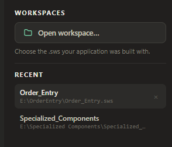
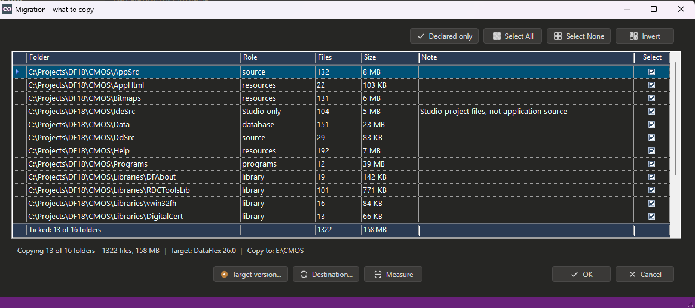
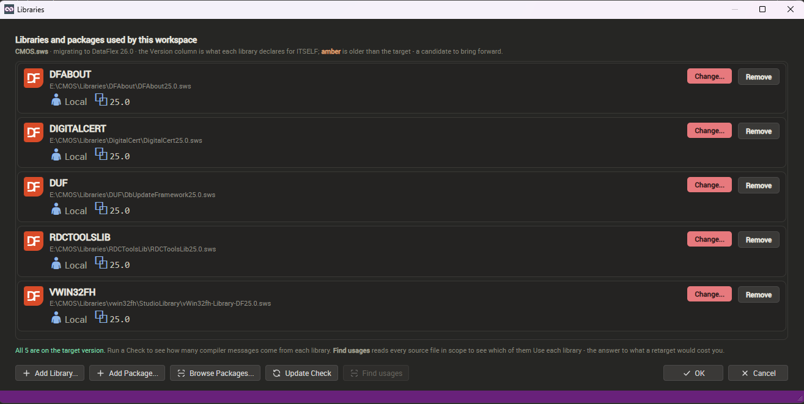
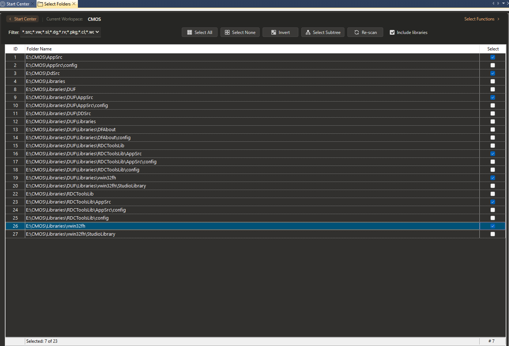
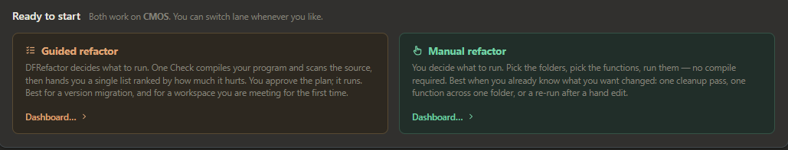
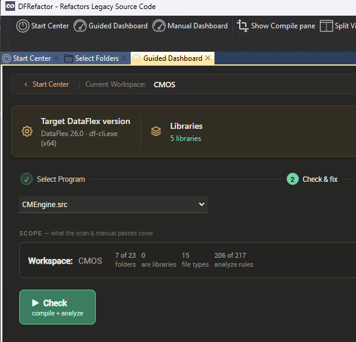
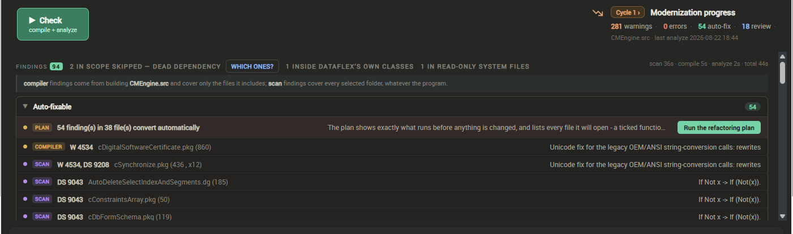
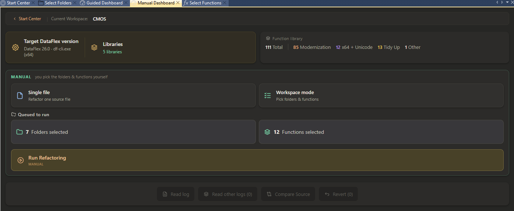
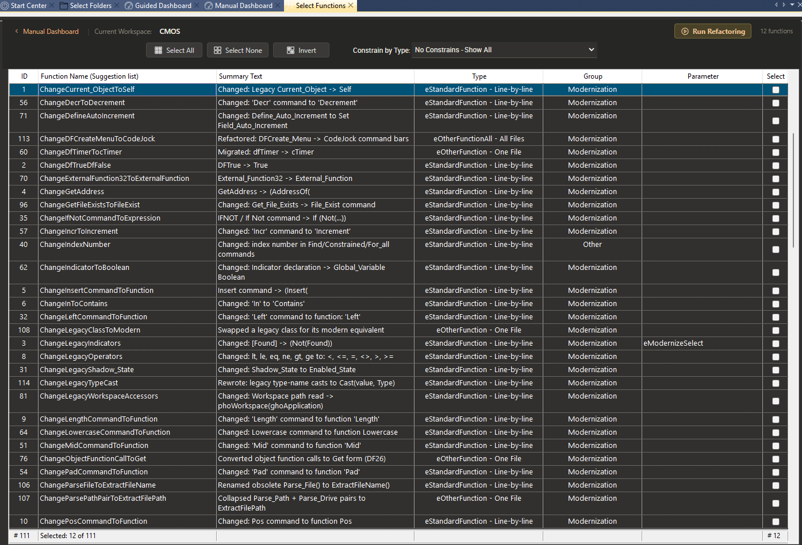

How to use the Program
This page describes a complete refactoring session, in the order that the program expects. The guided route follows the same order, and the tour on the Start Center shows each step on screen. Each part of the work is described in its own topic under The Refactor Cycle.
Before anything else: back up or check in your source. The built-in backup mechanism is a safety net, not a substitute for version control. You are responsible for ensuring your source is safely preserved before any refactoring run. The author of this software makes no guarantee that the built-in backup mechanism always works as intended.
Step 1 — Choose the DataFlex version you are moving to
All other steps depend on this choice, which is why it comes first. You select a compiler, and DFRefactor reads the version from it. That version decides which refactoring functions your workspace needs: a workspace that is moved to DataFlex 26 needs different changes than one that is moved to DataFlex 25.
Step 2 — Open the workspace
DFRefactor works on a workspace (.sws file). The workspace home folder is the root for the backup directory.

Open one from the Start Center with Open workspace..., pick it from the RECENT list, or drag an .sws file from Windows Explorer onto the application window. Any .sws file of the workspace can be used; the DataFlex version in the file does not matter. Right-click a recent entry to remove it.
The name of the workspace is shown in the header of every view, so that you cannot run the refactoring on the wrong workspace by mistake.
Step 3 — Copy the workspace, and work on the copy
Do this before any source file is changed. Migration - what to copy makes a copy of the workspace and creates a new .sws file for it, for the version you are moving to. The original workspace continues to compile exactly as before while you work on the copy.

Each folder is listed with the Role that DFRefactor has determined for it, its number of files and its size. Declared only selects only the folders that the workspace itself declares. Measure calculates the total size of the selected folders. Target version... sets the DataFlex version of the copy, and Destination... sets where the copy is saved.
Step 4 — Match the libraries, and the packages
A DataFlex workspace lists the shared libraries that it is compiled with in its .sws file, and a copied workspace still refers to the libraries of the original. The Libraries tile shows this list and lets you edit it. For a DataFlex 26 workspace it also shows the packages that the workspace depends on. The heading of the tile is Libraries and packages used by this workspace, and each entry is shown as a card.

What a card tells you
- Publisher and version — the version that each library declares for itself. For a package that is pinned to a git commit, the word commit is shown before the value, so that a commit SHA is not mistaken for a release number. Amber means that the version is older than the version you are moving to, so it may need to be updated.
- The path — as written in the .sws file. Click it to show that folder in Windows Explorer. A computer often has several copies of the same library.
- not found — nothing is at that path — the most common problem after a workspace has been copied.
- Entries that a library declares — marked with a tag. They are shown because they are also compiled into the program.
The line at the bottom summarizes the list: how many libraries already have the target version, and what a Check would report for each one.
Editing the list
- Add Library... — select the library's .sws file. Where possible, the entry is saved as a path relative to this workspace, so that it still works when the workspace is copied.
- Change... — replace an entry with another .sws file, for example a newer version of the same library.
- Remove — removes a workspace entry from the list. Nothing else is changed.
- OK and Cancel — the three commands above only change the list in memory. OK makes a backup of the .sws file and then saves the list in it. Cancel leaves the file unchanged.
- Remove on an entry that a library declares is the exception. It is saved immediately in that library's own .sws file, which changes the library for every workspace that uses it. You are asked to confirm first, and the default answer is No, because Cancel cannot undo it afterwards.
- Find usages — counts the source files that directly Use each library. This shows how much work it would be to point an entry to another library. Because it reads the whole workspace, it is not done automatically when the workspace is opened. In a DataFlex 26 workspace each dependency has its own fixed version, so the button is disabled there.
Packages
- Add Package... — one field that accepts all three forms, which are described in the dialog under Local, Cloud and Git. Browse... fills in a local path. Copy link copies a complete example to the clipboard, including the path inside the repository. If that path is left out, the installation fails.
- Browse Packages... — the packages that the package manager offers for this workspace, each with its description, publisher and version, and an Install button. Packages that are already installed are not listed.
- Details — Publisher, Licence, DataFlex (the releases it supports) and Requires, then the description. If a package declares no licence, no licence declared is shown instead of an empty field.
- Update Check — checks which newer versions exist, without changing anything. The Update button on each card is disabled until the check has run. After the check, it shows Up to date when there is no newer version, so that "not checked" and "no update available" look different.
- Uninstall — unlike Remove, this is done immediately.
DFRefactor does not download anything itself. The downloading and installing is done by df-cli, which is included with DataFlex 26.
An INI workspace must be converted first
Packages require the DataFlex 26 JSON workspace format. The older INI format cannot store them, so Add Package... and Browse Packages... are disabled. The dialog explains this and offers Convert to JSON now, which runs df-cli in the Convert workspace to the DataFlex 26 format window and shows its output while it runs. The [Libraries] section is converted to a list of dependencies, and the listed libraries continue to work.
Step 5 — Set the scope
Select Folders sets which folders are included. The first time a workspace is opened, DFRefactor scans the home folder and fills this list. Use Select All, Select None, Invert and Select Subtree to select folders, Re-scan to rebuild the list, and Include libraries to decide whether the workspace's libraries are included in the list. The selection is saved automatically.
Filter: on the same view sets which file types are included. Pick a preset (for example *.src;*.vw;*.sl;*.dg;*.rv;*.pkg;*.cl) or type your own wildcard combination. Every file under the selected folders and their sub-folders that matches one of the extensions is included.

Step 6 — Guided, or manual

With Guided refactor, DFRefactor decides what to run: one Check, one list of findings sorted by how serious they are, and a plan that you approve before any file is changed. With Manual refactor, you select the folders and the functions yourself, and no compile is needed. This works best when you already know what you want to change. Both use the same tools, and you can switch between them at any time.
Step 7 — Check
One Check does two things. It scans your selected source folders for obsolete code. It then compiles the program with the compiler you selected and analyzes the result: where possible, each error and warning is linked to the refactoring function that fixes it. The results of both are shown in the same list.

Before you press the button, the SCOPE line above it shows exactly what the Check will include. See Check - Compile + Analyze and Analyzer.
Analyze Source is the second method of finding code that needs changing, and it can also be run on its own. It scans the source code for obsolete code that still compiles. The compiler does not report such code, so compiling would never find it. A workspace that compiles without any messages can still contain a lot of such code.
Step 8 — Read the list, approve the plan
The findings are shown in one list, sorted by what to do first: what DFRefactor can fix for you, then what stops the compile, then what needs your decision, and then what has to be changed by hand. Each row is marked COMPILER or SCAN, so that you can see how it was found.

Run the refactoring plan opens the plan for you to review before any file is changed. It shows which refactoring functions will run, the setting of each function, and every file that each function will open. Clear the check box of anything that you do not want to run yet. The plan is saved with the workspace, so you can close a session and continue it later.
You will usually need more than one round, because fixing some findings reveals new ones. Each round is recorded, so you can see the number of findings go down from one round to the next. See Modernization Progress.
The manual route: choosing functions yourself
On the Manual Dashboard, choose Single file to refactor one source file, or Workspace mode to select folders and functions. The dashboard shows what will be run, and below that the results of the run.

Select Functions lists all refactoring functions. Select the ones you want to run.

- Function Name (Suggestion list) — type any part of a function name to go to it.
- Summary Text describes in one line what the function changes.
- Constrain by Type: shows only the functions of one type.
- Type shows how the source code is passed to the function: one line at a time, one whole file as a string array, or all selected files at once. See Refactoring Functions.
- Group shows what the function is used for: Modernization, Tidy Up, x64 + Unicode, or Other.
- Parameter — some functions use an extra setting. Double-click the cell to choose a value, and point to it to read what the values mean.
Run Refactoring starts the run. Large workspaces may take several minutes.
Two options change what a run does:
- Count Source Lines (only) — no functions are run. DFRefactor counts the source lines that are not blank and not comments, in the selected folders and file types. Studio-generated ActiveX/OCX code is excluded.
- Read Only — the selected functions are run, and the summary reports how many changes would have been made, but no file is changed. This is useful for finding out how large a change will be before you make it.
After a run
Before a run changes a file, the file is copied to a DFRefactor Backup folder in the workspace's home folder. The backup folder has the same sub-folder structure as the folders that are processed.
Overwrite cycle. If you run the refactoring on the same workspace again within the overwrite cycle (99 days by default), the existing backup is not overwritten. The original source code is therefore kept through a series of runs. After the overwrite cycle has passed, the next run creates new backups. The number of days is set with No of Days for Overwrite Cycle in Program Settings.

Compare Source shows what was changed. In the editor, it compares the file with its backup; on the dashboard, it compares the whole folder tree. It uses the compare program that is selected in Program Settings.
Revert opens Undo Refactoring, which moves the backed-up files back to their original folders, so that the changes of the run are undone.